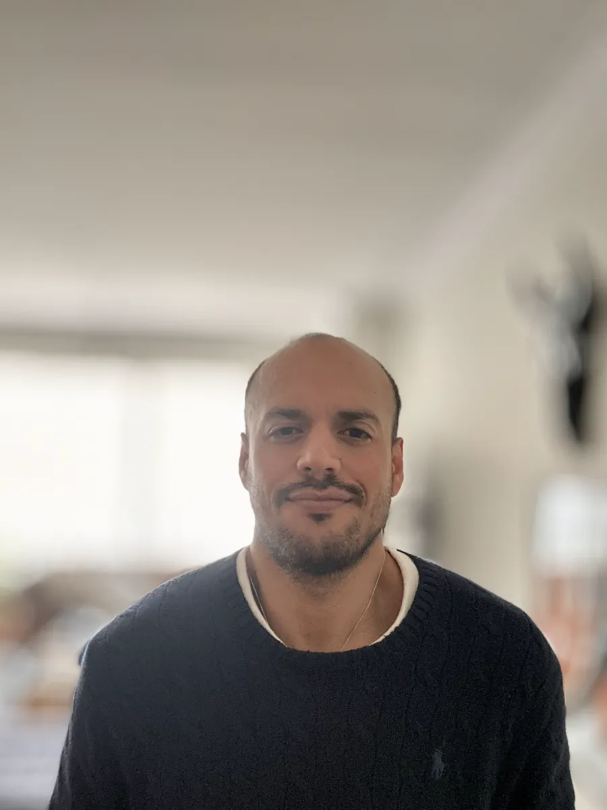

- Web design
- Front-end
- AI
- Buenos Aires
Design & code.
- Strategy
- Design
- Code
Websites and products, designed and built end to end, with images and video made with AI. Everything below is live.
Work
03 / 08

Who’s on the other side
Meet Max.
I started in advertising in 2007, moved into graphic design, learned to code and ended up in user research. I’ve been a founder, an employee at a traditional company, the UX person at a startup and a salesman at a trade show. Today I do both halves: the screen and the code that makes it work.
Full background on LinkedInWhat doesn’t fit
in a video.
-
Gastro
A financial copilot for restaurants. Owners know how much they sell and almost none know how much they make, so I designed it around decisions (closing a shift, menu engineering, break-even) and built it in Next.js with PostgreSQL.
-
OASIS
A casino designed to look after the player: a deliberate break every so often, and losses always in view. Then I pitched it at industry trade shows, face to face with the people who run the business.
-
Grupo Midas
I joined making print pieces. Today I run marketing for four bingo halls around Buenos Aires, and I’m building their internal dashboard and their new site in Next.js.
The system
All eight projects above came out of the same process. Before any code is written, seven decisions get approved, one at a time and on screen: goal, brand, references, direction, color and type, the first screen, and motion.
AI generates the images and video, and writes a good part of the code. What keeps it in check is a blacklist of what any model does on its own, like Inter or three cards with icons, and a log of what I’ve already used, so the next site doesn’t look like the last one.
- Before building
- Goal
- Brand
- References
- Direction
- Color and type
- The first screen
- Motion
- Building
- AI images and video
- Code
- Mobile
- Copy
- Search
- Check against the generic